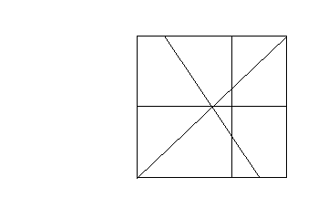

There is a 1000 1000 square cake. We use knife to cut the cake. The problem is
after a series of cutting, how many partitions the cake will has.
1000 square cake. We use knife to cut the cake. The problem is
after a series of cutting, how many partitions the cake will has.
Assumption:
- 1.
- The number of the cutting will be no more than 8.
- 2.
- After the cutting, the length of any edge of the partition will no less than 1.
- 3.
- The vertex coordinates of the cake are (0,0)(0,1000)(1000,1000)
(1000,0).
- 4.
- The intersections of the cut line and the cake edge are two .
The following Graph is a sample partition. The number of the
partitions is 10.

The first line of the input is an integer M, then a blank line followed by M datasets. There is a blank line between datasets.The first line of each dataset is the number of the cutting . The following lines
contain the information
of the cut lines. Each line has 4 integer number, which represent the
coordinate of the intersection
of the cut line and the cake edge.
The output for each dataset is the number of the partitions of the cake. Print a blank line between datasets.
1
3
0 0 1000 1000
500 0 500 1000
0 500 1000 500
6
Miguel A. Revilla
1999-01-11